Distribuciones de probabilidad: variables continuas
Estadística Básica | 2026
Hoja de ruta
- Variables aleatorias continuas
- Función de densidad y distribución de probabilidades
- Distribución Normal
- Distribución Normal estándar
- Distribución de la media muestral
- Teorema del límite central
\[\newcommand{\LI}{\text{LI}} \newcommand{\LS}{\text{LS}} \newcommand{\MC}{\text{MC}}\]
Distribuciones de probabilidad continuas
Variables aleatorias continuas
Una variable aleatoria continua (VAC) tiene infinitos valores posibles (puntos en un intervalo), asociados con mediciones en una escala continua.
Ejemplo
Rendimientos de lotes de soja en qq/ha de una región amplia (población).
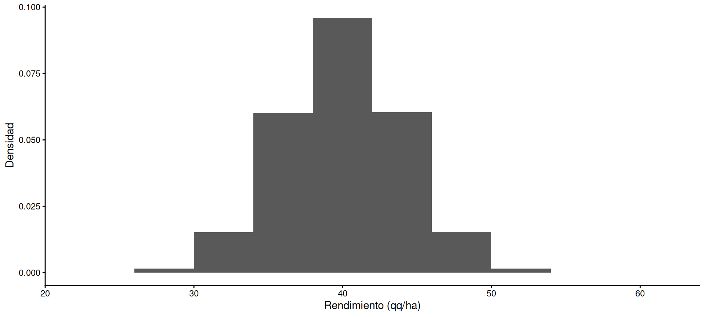
¿Cuál es la probabilidad de seleccionar un lote con rendimiento 36 qq/ha? \(\quad P(X = 36) = ?\)
Spoiler alert!: la probabilidad de un valor dado de \(X\) es 0!!
Probabilidades como áreas…
Ejemplo rendimientos de lotes de soja en qq/ha de una región amplia (población)
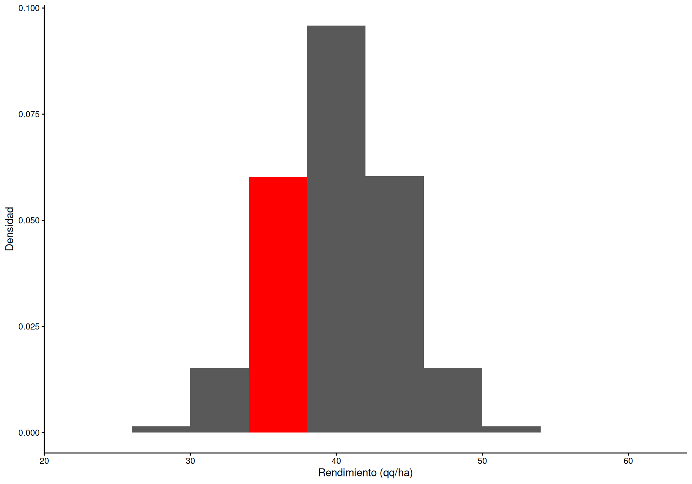
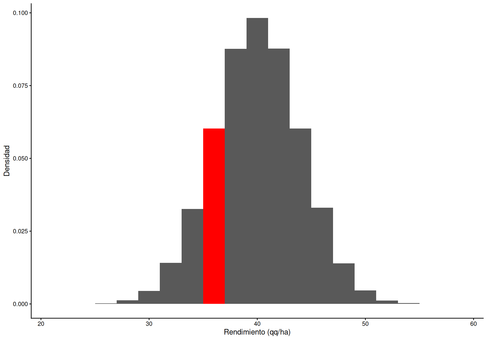
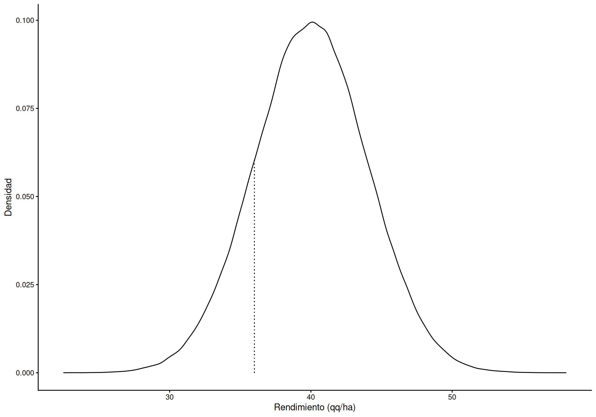
La probabilidad de que el rendimiento de un lote elegido al azar esté entre 34 y 38 es el área que ocupa el rectángulo (ancho de clase x altura)
\[P(34 \le X \le 38) = 4 * 0.0601267 = 0.2405067\]
Si dividimos en intervalos de 2 qq/ha, los valores de densidad cambian y las barras son más angostas: la probabilidad es menor
\[P(35 \le X \le 37) = 2 * 0.0602233 = 0.1204467\]
Si dividimos en intervalos sucesivamente más pequeños (infinitamente pequeños) llegamos a la curva de densidad. La probabilidad de un punto es 0, ya que la curva representa la altura (densidad) pero el ancho de clase tiende a 0
\[P(36 \le X \le 36) = 0 * 0.0604927 = 0\]
Función de densidad de probabilidad
En VAC la función de densidad de probabilidades \(f(X)\) describe la altura de la curva para un valor dado de \(X\), \(x_0\).
NO ES LA PROBABILIDAD!! Es imposible asignar un valor de probabilidad a cada uno de los infinitos valores de \(X\)
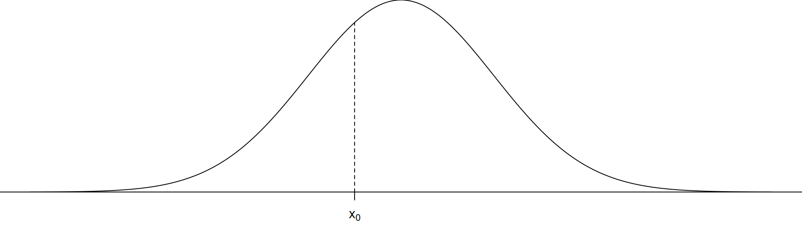
\[\small P(X = x_0) = f(x_0)\]
Área bajo la curva = probabilidad
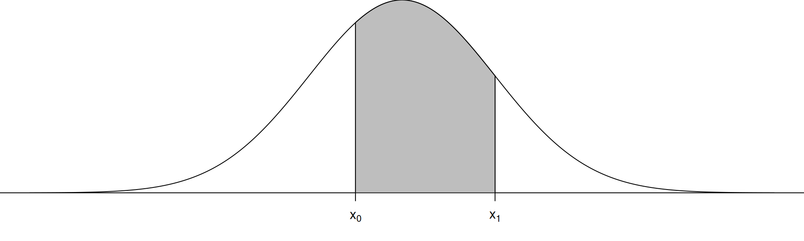
La probabilidad de que una VAC caiga en un intervalo \([x_0, x_1]\) se desprende de la interpretación probabilística del área de un intervalo en un histograma de frecuencias relativas, y es igual al área bajo la curva de densidad
\[\small P(x_0 \le X \le x_1) = \int_{x_0}^{x_1} f(X) \mathrm{d}X\]
Función de distribución acumulada
La función de distribución de probabilidad acumulada \(F(X)\) es la probabilidad de que la VAC tome un valor igual a \(x_0\) o menor.
\[P(X \le x_0) = F(x_0) = \int_{-\infty}^{x_0} f(X) \mathrm{d}X\]
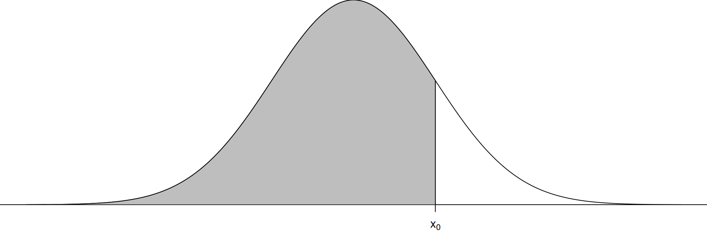
Importante
La probabilidad de que un valor de la VAC esté en \([x_0, x_1]\): \(\quad P(x_0 \le X \le x_1) = F(x_1) - F(x_0)\)
La probabilidad en un punto es igual a 0: \(\quad P(x_0 \le X \le x_0) = F(x_0) - F(x_0) = 0\)
Dado que \(P(X = x_0) = 0\), la probabilidad de un intervalo no depende de si sus límites están incluidos: \[P(x_0 \le X \le x_1) = P(x_0 < X \le x_1) = P(x_0 \le X < x_1) = P(x_0 < X < x_1)\]
Valores esperados y varianza
Esperanza
La esperanza matemática \(E(X)\) de una VAC es el valor esperado de la variable aleatoria \(X\) en la población
\[E(X) = \mu_X = \int_{-\infty}^{\infty} X f(X) \mathrm{d}X\]
Varianza
La varianza \(V(X)\) es el valor esperado de los desvíos cuadráticos de los valores de \(X\) respecto a su esperanza. El desvío \(D(X)\) es la raíz cuadrada positiva.
\[V(X) = E\left\{\left[ x_i - E(X) \right]^2\right\} = \int_{-\infty}^{\infty} (x_i - \mu_X)^2 f(X)\mathrm{d}X\]
Ambas tienen las mismas propiedades vistas para VAD.
Distribución Normal
Distribución Normal
Muchos procesos contínuos de la naturaleza se distribuyen siguiendo una curva con forma de campana, unimodal, simétrica: la distribución NORMAL
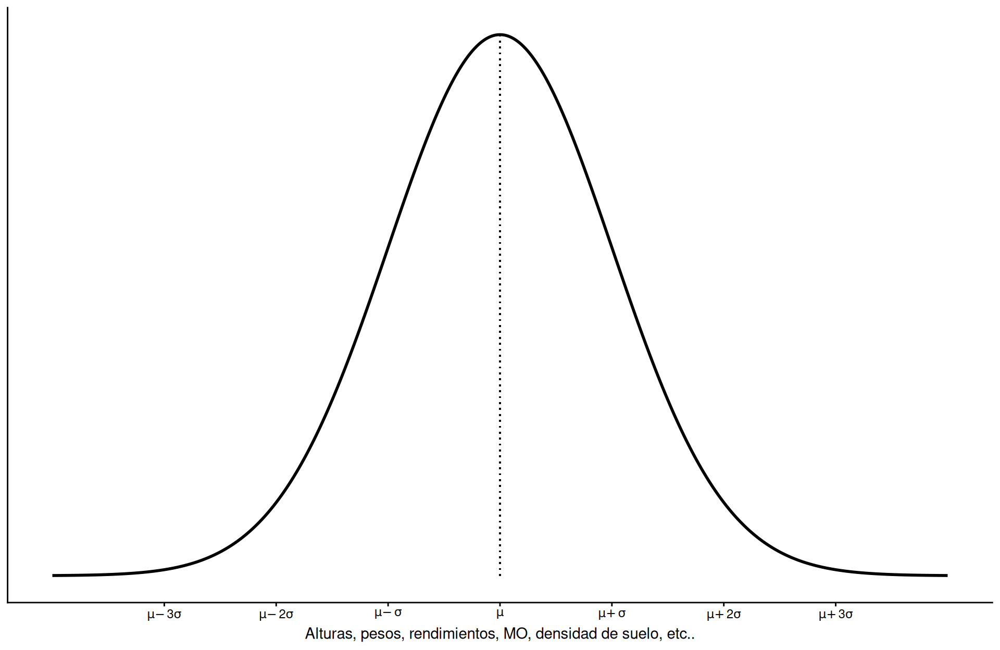
\[X \sim N(\mu, \sigma^2)\]
Funciones de densidad y probabilidad acumulada
Función densidad
\[f(X) = \dfrac{1}{\sigma\sqrt{2\pi}} e^{-\dfrac{(X - \mu)^2}{2\sigma^2}}\]
Función probabilidad acumulada
\[F(X) = P(X \le x_0) = \dfrac{1}{\sigma\sqrt{2\pi}} \int_{-\infty}^{x_0} e^{-\dfrac{(X - \mu)^2}{2\sigma^2}} \mathrm{d}X\]
La distribución queda definida por dos parámetros: media (\(\mu\)) y varianza (\(\sigma^2\))
Efecto de los parámetros \(\mu\) y \(\sigma^2\)
El parámetro \(\mu\) determina la posición de la curva
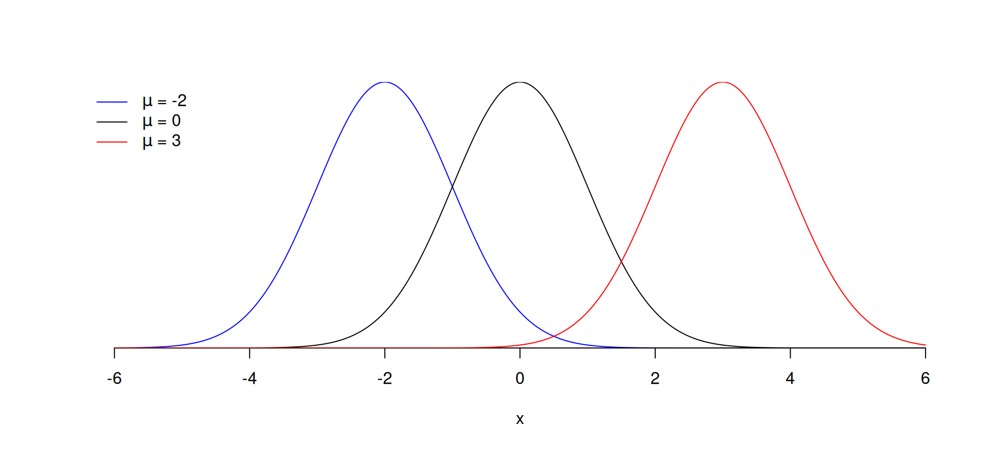
El parámetro \(\sigma^2\) determina la forma (dispersión)
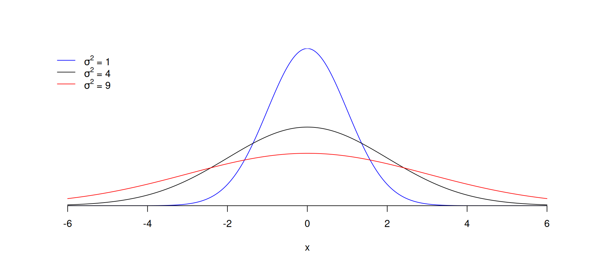
Valores esperados y varianza
Esperanza
\[E(X) = \int_{-\infty}^{+\infty} X f(X) \mathrm{d}X = \mu\]
Varianza
\[V(X) = \int_{-\infty}^{+\infty} \left[X-E(X)\right]^2 f(X) \mathrm{d}X = \sigma^2\]
Desvío
\[D(X) = \sqrt{V(X)} = \sigma\]
Regla Empírica
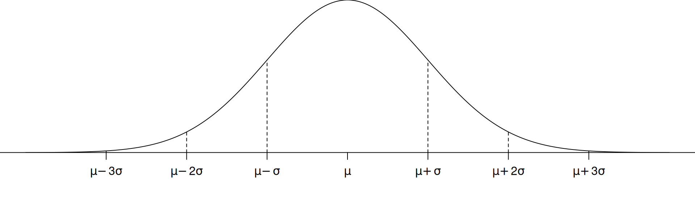
\[\begin{align} P(\mu - \sigma \le X \le \mu + \sigma) &\approx 0.6826 \\ P(\mu - 2\sigma \le X \le \mu + 2\sigma) &\approx 0.9544 \\ P(\mu - 3\sigma \le X \le \mu + 3\sigma) &\approx 0.9974 \end{align}\]
Normal estándar
Hay tantas curvas normales como combinaciones de \(\mu\) y \(\sigma^2\). Mediante la estandarización se facilita el cálculo de probabilidades.
\[Z = \dfrac{X - \mu}{\sigma} \sim N(0,1)\]
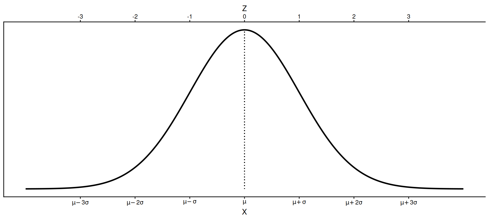
Para volver a la escala original:
\[X = \mu + Z\sigma \sim N(\mu, \sigma)\]
Percentiles \(100p\%\)
Son los valores de la distribución Normal para los cuales \(100p\%\) de los valores de la población queda por debajo y \(100(1-p)\%\) quedan por encima.
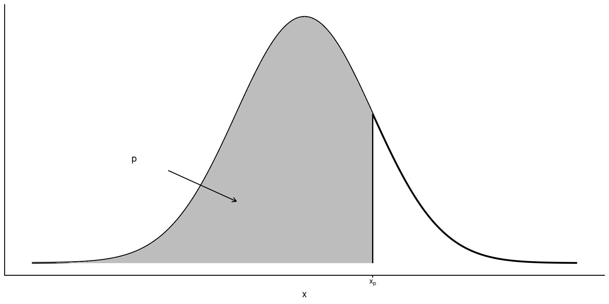
La mediana es el percentil 50
Cálculo de probabilidades y percentiles
Note
En R, familia *norm()
dnorm(x, mean, sd): \(f(x)\), densidad (no es probabilidad)
pnorm(q, mean, sd, lower.tail): \(P(X \le x)\)
qnorm(p, mean, sd, lower.tail): cuantil para una probabilidad acumulada \(p\)
rnorm(n, mean, sd): \(n\) valores aleatorios
mean/sd por defecto son 0/1 (Normal estándar), lower.tail = FALSE para \(P(X > x)\)
Ejemplo
Altura de inserción de la mazorca de la F2 de un híbrido de maíz: \(X \sim N(\mu = 1.45, \sigma = 0.2)\) m. Si seleccionamos al azar una planta de un lote sembrado con individuos de la F2:
Ejemplo
¿Cuál es la probabilidad de elegir un individuo con altura de inserción menor a 1.3 m?
\[P(X < 1.3) = ?\] ::: {.fragment}
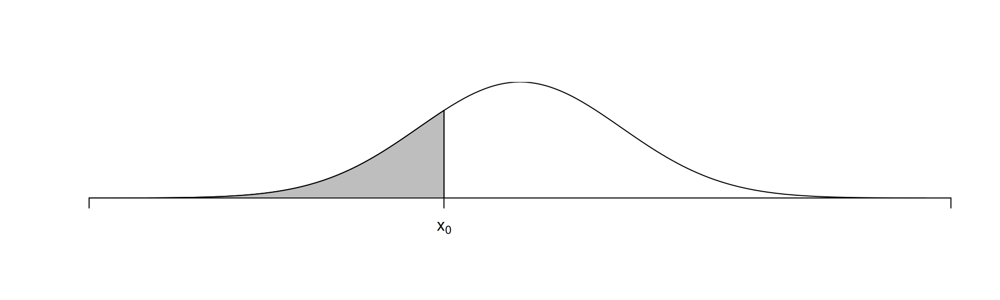
:::
Ejemplo: intervalo
Ejemplo: percentil
Evaluar ajuste a la distribución normal
Mediante el gráfico QQ plot se pueden comparar los cuantiles de la distribución empírica (muestra) con los de la distribución teórica (Normal).
Ejemplo
Pesos de 50 terneros.
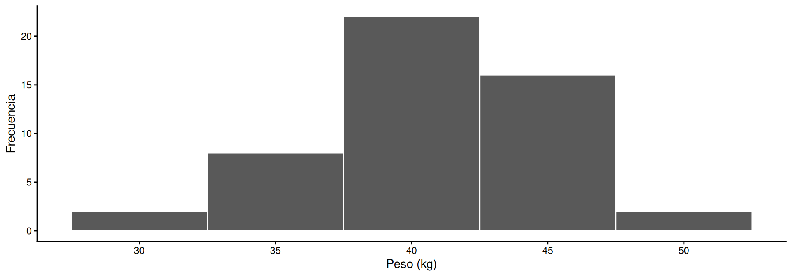
¿Tienen distribución normal?
¿Cómo construir un QQ plot?
Paso 1: ordenar los datos (cuantiles muestrales) y obtener su frecuencia relativa acumulada
x <- c(44.1,25.4,36.3,40.2,39.4,33.8,43.8,38.4,31,35.2,37.8,39.7,52.6,
33.4,42.2,41.6,44.2,38,43.3,39,46.6,39.4,37.5,46.9,42.3,38.6,
41.8,41.5,37.7,42.3,35.3,40,41.6,31.7,46.6,37.7,36.4,48.2,40,
36.4,42.7,43.5,38.3,42.7,36.8,37.3,37,32.3,29.5,37)
q_muestra <- sort(x)
p_muestra <- ecdf(q_muestra)(q_muestra)Paso 2: cuantiles teóricos que corresponden a esas probabilidades, y gráfico
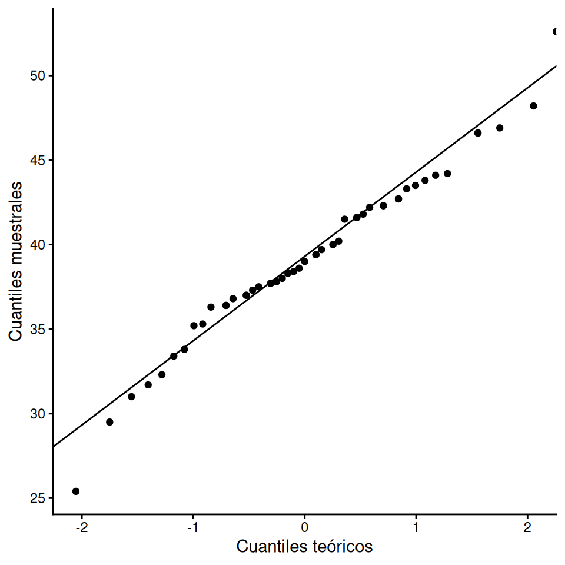
QQ plot con geom_qq()
Todo en un solo paso usando geom_qq() y geom_qq_line()
Distribución de la media muestral
Distribución de la media muestral
La media muestral \(\bar{X}\) se calcula a partir de una muestra de \(n\) VAC: es en sí misma una VAC, con una distribución de probabilidades asociada.
\[E(\bar{X}) = \mu \qquad V(\bar{X}) = \sigma^2_{\bar{X}} = \dfrac{\sigma^2}{n}\]
A mayor tamaño de muestra \(n\), la distribución de \(\bar{X}\) se concentra más en torno a \(\mu\)
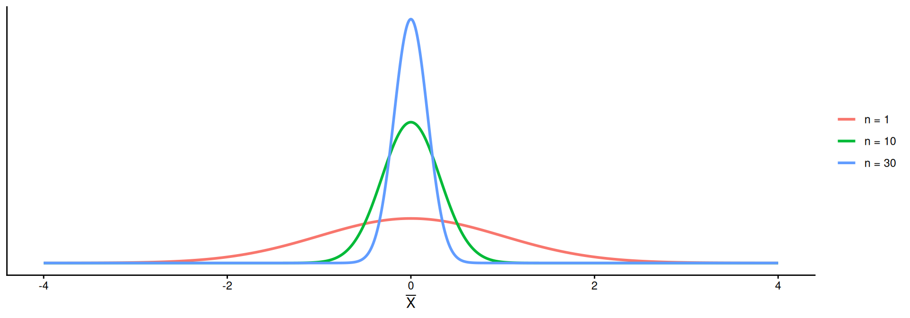
Esperanza y varianza de \(\bar{X}\)
La media de \(n\) VAC, \(X = \{X_1, X_2, \dots, X_n\}\), es \(\bar{X} = \dfrac{1}{n} \sum_1^n X_i\)
Esperanza
Sabiendo que \(E(X) = \mu\) y aplicando las propiedades de la esperanza…
\[\begin{align} E(\bar{X}) = \mu_{\bar{X}} &= E \left( \dfrac{X_1 + X_2 + \dots + X_n}{n} \right) \\ &= \dfrac{1}{n} E\left(\sum X\right) = \dfrac{1}{n} (n\mu) = \mu \end{align}\]
Varianza
Sabiendo que \(V(X) = \sigma^2\) y aplicando las propiedades de la varianza…
\[\begin{align} V(\bar{X}) = \sigma^2_{\bar{X}} &= V \left(\dfrac{X_1 + X_2 + \dots + X_n}{n} \right) \\ &= \dfrac{1}{n^2}V(X_1) + \dots + \dfrac{1}{n^2} V(X_n) \\ &= \dfrac{1}{n^2} (n\sigma^2) = \dfrac{\sigma^2}{n} \end{align}\]
Teorema del Límite Central (TLC)
Para la media muestral \(\bar{X}\), de una muestra de \(n\) observaciones de una población con media \(\mu\) y desvío \(\sigma\):
\(\mu_{\bar{X}} = \mu\)
\(\sigma_\bar{X} = \dfrac{\sigma}{\sqrt{n}}\)
Si \(n\) es grande (\(n > 30\)), la distribución de \(\bar{X}\) es aproximadamente Normal: \[n \rightarrow \infty,\ \bar{X} \sim N(\mu, \sigma/\sqrt{n})\]
Si \(X\) es Normal, \(\bar{X}\) es exactamente Normal para cualquier \(n\)
Ejemplo
En un lote de novillos con \(\mu\) = 300 kg y \(\sigma\) = 50 kg seleccionamos 10 novillos al azar. ¿Cuál es la probabilidad de que el peso promedio sea inferior a 275 kg?
La variable de interés es \(\bar{X}\) (no \(X\)): \(E(\bar{X}) = \mu\) y \(V(\bar{X}) = \sigma^2/n\)
TLC para \(\sum X\) y aproximación Binomial-Normal
Para \(\sum X\), de una muestra de \(n\) observaciones de una población con media \(\mu\) y desvío \(\sigma\):
\(\mu_{\sum X} = n\mu\)
\(\sigma_{\sum X} = \sqrt{n}\sigma\)
Si \(n\) es grande (\(n > 30\)), la distribución de \(\sum X\) es aproximadamente Normal: \[n \rightarrow \infty,\ \sum X \sim N(n\mu, \sqrt{n}\sigma)\]
Si \(X\) es Normal, \(\sum X\) es exactamente Normal para cualquier \(n\)
Si \(X\) es VAD que cuenta los éxitos de una muestra de tamaño \(n\), es la suma de \(n\) variables aleatorias Bernoulli:
\[X = \sum^n_i Y_i \sim \text{Binom}(n, p)\]
Por el TLC para \(\sum X\), si \(n\) es grande se puede aproximar con la Normal de media \(\mu = np\) y desvío \(\sigma = \sqrt{npq}\)
\[X \sim N(np, \sqrt{npq})\]
Corrección por continuidad
\(P(X = x_0) \approx P(x_0 - 0.5 \le X \le x_0+0.5)\), ya que \(P(X = x_0) = 0\) en la Normal
Mala si \(np < 5\) o \(nq < 5\); buena si \(np \gg 20\) y \(nq \gg 20\); entre 5 y 20 la corrección mejora el ajuste
Ejemplo
En un lote de soja, el porcentaje de infección de una enfermedad es 44%. ¿Cuál es la probabilidad de que, seleccionando 50 plantas al azar, a lo sumo 15 estén infectadas?
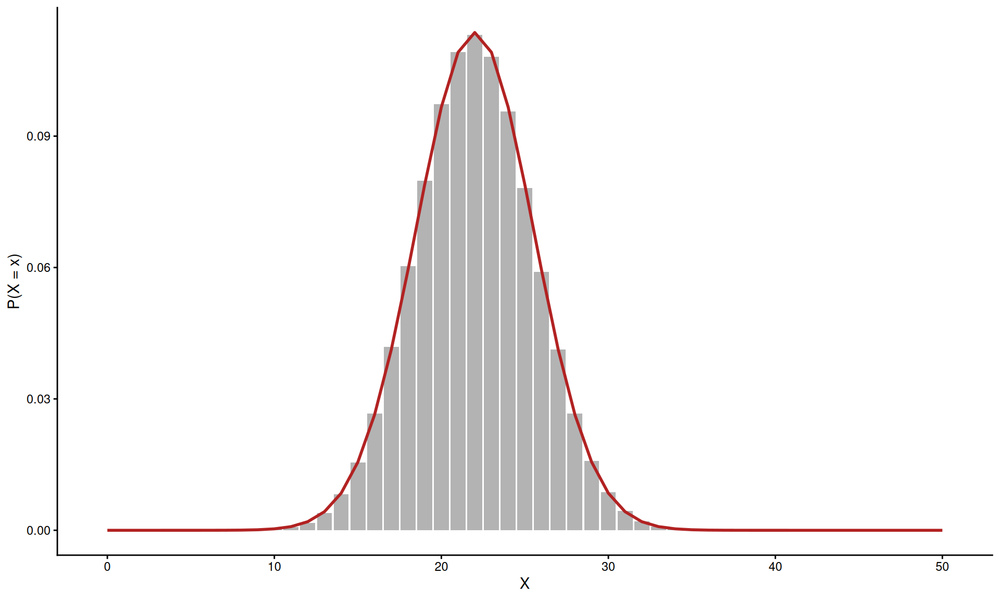
Ejemplo
Distribución binomial exacta
Aproximando con Normal (sin corrección)
Teniendo ambas funciones disponibles es preferible utilizar la correspondiente a la distribución exacta (Binomial)